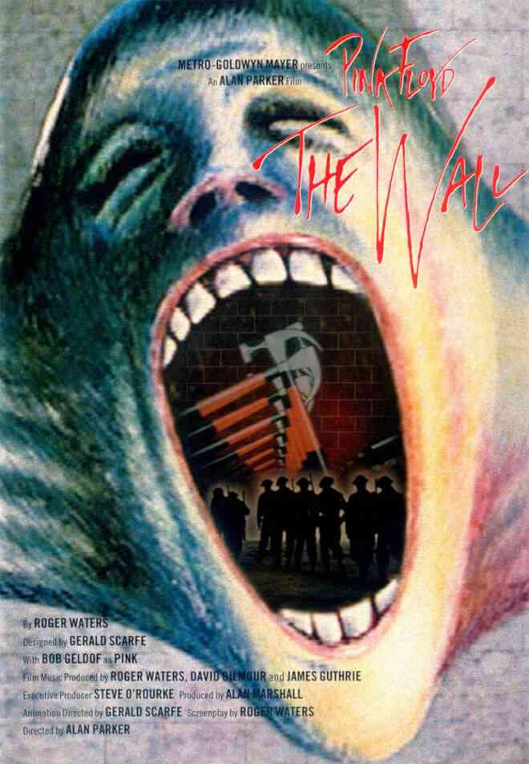
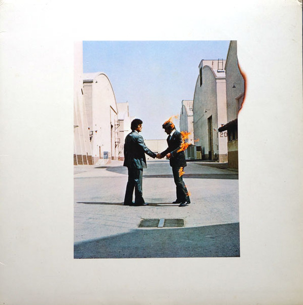

Discos:
The dark side of teh moon

The Dark Side of the Moon é o oitavo álbum de estúdio da banda britânica de rock progressivo Pink Floyd, lançado em 1 de março de 1973. O disco marca uma nova fase no som da banda, com letras mais pessoais e instrumentais menores, contendo alguns dos mais complicados usos dos instrumentos e efeitos sonoros existentes na época, incluindo o som de alguém correndo à volta de um microfone e a gravação de múltiplos relógios a tocar ao mesmo tempo. Os temas explorados na obra são variados e pessoais, incluindo cobiça, doença mental e envelhecimento, inspirados principalmente pela saída de Syd Barrett, integrante que deixou o grupo em 1968 depois que sua saúde mental se deteriorou. O conceito básico do disco foi desenvolvido quando a banda estava em turnê, e muito do novo material foi apresentado ao vivo, muito antes de ser gravado. A banda produziu o trabalho no Abbey Road Studios de Londres em diferentes sessões em 1972 e 1973 ao lado do produtor Alan Parsons, diretamente responsável pelo desenvolvimento dos elementos sonoros mais exóticos presentes no disco, e a capa, que traz um prisma sendo atingido por um feixe de luz o transformando em um arco-íris, foi desenvolvida para simbolizar a complexidade que o som da banda escondia por trás de sua aparência simples.
The Wall
Pink Floyd – The Wall é um filme de drama musical psicológico animado / ação ao vivo britânico de 1982dirigido por Alan Parker , baseado no álbum de mesmo nome do Pink Floyd de 1979 . O roteiro foi escrito pelo vocalista e baixista do Pink Floyd, Roger Waters . O vocalista do Boomtown Rats , Bob Geldof , interpreta o astro do rock Pink, que, enlouquecido pela morte de seu pai, constrói uma parede física e emocional para se proteger. Como seu álbum associado, o filme é altamente metafórico e frequentemente utiliza símbolos visuais e auditivos durante todo o tempo de execução. Possui pouco diálogo, em vez disso, é conduzido pela música do álbum. As canções usadas no filme têm várias diferenças em relação às versões do álbum, e uma das canções incluídas, " When the Tigers Broke Free ", não aparece no álbum. Apesar de sua produção turbulenta, o filme recebeu críticas geralmente positivas e tem um culto estabelecido entre os fãs do Pink Floyd, embora sua recepção da própria banda tenha sido menos favorável.p>
wish you were here
The Dark Side of the Moon é o oitavo álbum de estúdio da banda britânica de rock progressivo Pink Floyd, lançado em 1 de março de 1973. O disco marca uma nova fase no som da banda, com letras mais pessoais e instrumentais menores, contendo alguns dos mais complicados usos dos instrumentos e efeitos sonoros existentes na época, incluindo o som de alguém correndo à volta de um microfone e a gravação de múltiplos relógios a tocar ao mesmo tempo. Os temas explorados na obra são variados e pessoais, incluindo cobiça, doença mental e envelhecimento, inspirados principalmente pela saída de Syd Barrett, integrante que deixou o grupo em 1968 depois que sua saúde mental se deteriorou. O conceito básico do disco foi desenvolvido quando a banda estava em turnê, e muito do novo material foi apresentado ao vivo, muito antes de ser gravado. A banda produziu o trabalho no Abbey Road Studios de Londres em diferentes sessões em 1972 e 1973 ao lado do produtor Alan Parsons, diretamente responsável pelo desenvolvimento dos elementos sonoros mais exóticos presentes no disco, e a capa, que traz um prisma sendo atingido por um feixe de luz o transformando em um arco-íris, foi desenvolvida para simbolizar a complexidade que o som da banda escondia por trás de sua aparência simples.
TODOS OS DIREITOS RESERVADOS